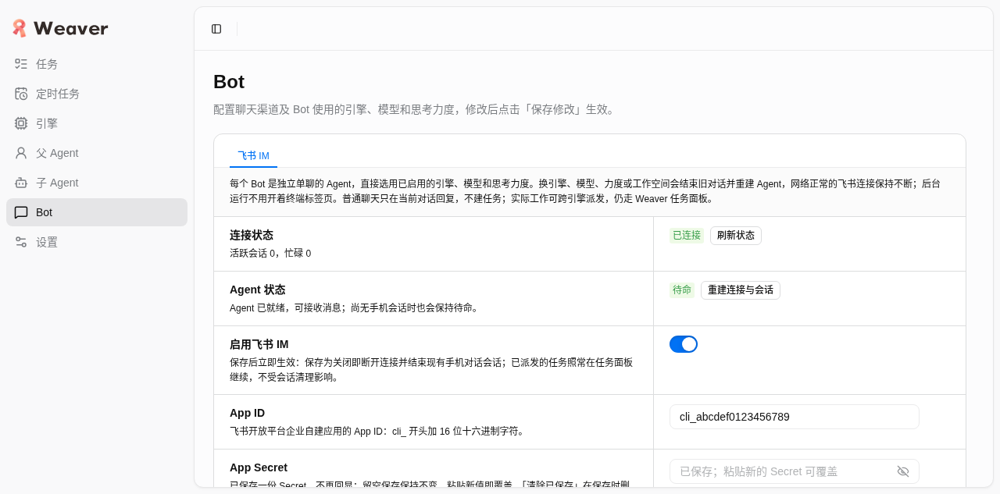
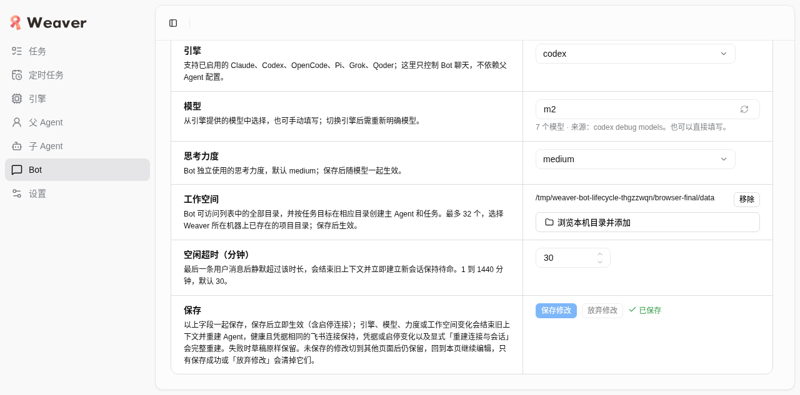
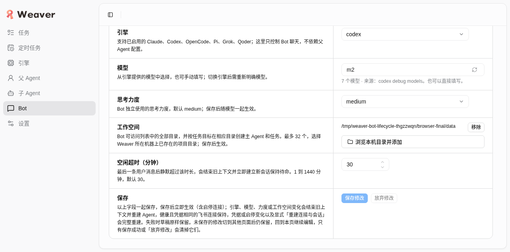
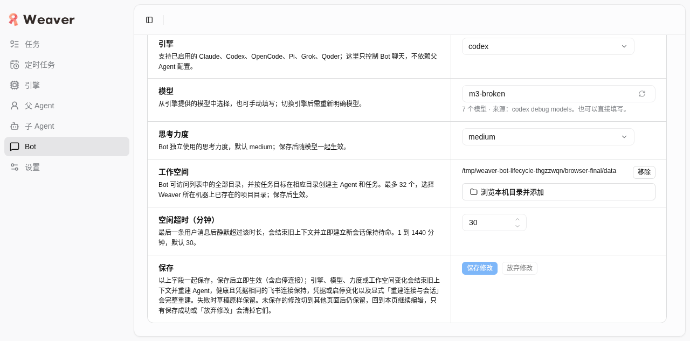
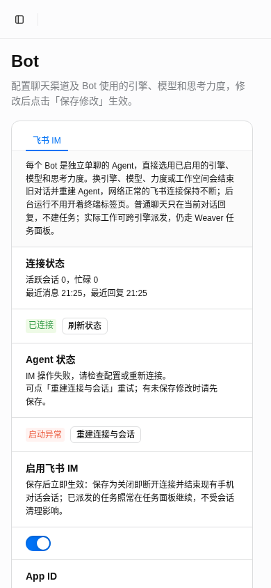
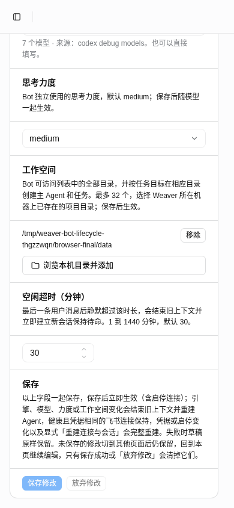

日期 2026-10-22（UTC）。被测 HEAD 5ae023f。本报告可直接以 file:// 打开阅读，无外部依赖。
先说结论：真浏览器改模型保存 → 真实 API/store/ImService 只换 Agent 不换 channel， starting 后约 3 秒经 1 秒轮询自主变待命，无需手动刷新；Agent 启动失败时飞书连接保持已连接， 错误文案与按钮名准确；桌面及 390px 布局可读无溢出。 本包不是真飞书、不是真实模型：唯一合成边界是外部 parent/channel 工厂与合成入站消息， 详见“验证范围”。
startRuntime 私有实例、真实 HTTP
/api/rpc（getImSettings/saveImSettings 未 mock）、真实 ImService 状态机与 store。parentFactory（2500ms 启动延迟，可定点报 protocol 错误）、
channelFactory（即时假连接）、经私有 fixture 端口注入的单聊入站消息。不读真实 AppSecret，不发消息，不执行模型。im-polling.ts 与 HEAD 无差异，docs/verification/im-polling 六项控制器证据继续有效；
ImSettings.tsx 与 HEAD 差异仅 3 处文案（按钮名“重建连接与会话”、单聊 Agent 长说明、保存提示），逻辑零改动。| # | 验收项 | 状态 | 证据 |
|---|---|---|---|
| A | 桌面 Bot 页：独立单聊说明、后台无需终端、跨引擎提示可读；m1 / 已连接 / 待命 | 通过 | A-desktop-initial.png |
| B | 浏览器改 m1→m2 并保存：parents 1→2、parentCloses 1、channels 仍 1；starting→ready 全自动 | 通过 | starting / ready |
| B2 | 同一 live channel 合成入站 → 新 parent 回复，无新增 parent/channel | 通过 | B-inject-replied.png |
| C | fake parent 报 protocol 错误：仍已连接、启动异常、按钮名“重建连接与会话”、草稿保留、无假 ready | 通过 | C-agent-error.png |
| D | 390px 长说明/保存提示/Agent 反馈可读，无水平溢出无遮挡 | 通过 | 上 / 下 |
| 时间 | 方法 | revision | 连接 | Agent |
|---|---|---|---|---|
| 01:25:03.807 | saveImSettings | 2 | 已连接 | 启动中 |
| 01:25:04.807 | getImSettings | 2 | 已连接 | 启动中 |
| 01:25:05.808 | getImSettings | 2 | 已连接 | 启动中 |
| 01:25:06.807 | getImSettings | 2 | 已连接 | 待命 |
1.00 秒轮询节拍，全程未点“刷新状态”。HAR 106 请求全部 2xx，页面 console 0 条，网络错误 0。
fixture 真实计数：B 后 parents=2、parentCloses=1、channels=1、channelCloses=0；
入站后 parentSends=1、replies=1；C 后 parents=3、parentCloses=2、channels 仍 1。机器契约见
proof.json。含合成假 secret 的 HAR/请求体原文未进 git，已随私有现场删除。






append；(2) fake stream
返回拼接文本而非 controller.messageId，产品按 result === messageId
判定投递（真实投递语义，fake 必须遵守）。本任务 Chrome 已 close，profile 确认无占用后删除；scope dev-weaver-im-final-lifecycle
无残留，端口已释放；任务私有现场（data/build/HAR/profile/脚本）已整体删除，仅保留本目录最小证据。
共享服务、他人 Chrome、真实开发 DB、用户数据均未触碰。本包未提交、未推送；产品/测试代码零改动。